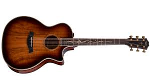

MY PERSONAL TALENT
SKILLS
1Everyone has their own skill that makes them a better person. 2I am proud to say that I have personal skill in decision making. 3Everyday and every step of the way we are making decision, one way or another. 4Decision making involves risks, and I would say that it is one of my weaknesses.
5It could be the culture or the familial orientation I have, where decision making is the responsibility of the father or the husband in the family. 6I know I have a good understanding and better judgement when it comes to assessing certain situations, but my skills in decision making is
not exercised. 7I want to develop that skill but I had no confidence in voicing out my opinion at home. 8Also, I have the skill called multi-tasking, because I’m the type of person to procrastinate a lot. 8So most likely I do more than one task all at the same period of time.
9Because in my point of view, multi-tasking saves a lot of time and it will improve my creativeness and critical thinking. 10Lastly, I have also this skill called effective communication. 11because for me communication keeps a healthy personal or professional relationship with the people I am interacting
with, be it at home, at work or in any circumstances where my personal opinion is required. 12Skills are something you learn through experience. 13And that you can apply to things you do. 14You might pick them up at school or work, during activities, or simply by spending time with your family and friends. 15They’re important in all areas of life.
16It can be super varied and are used in lots of different situations. 17Skills are so important in life. 18It can improve your life and can lead you to a better future.
HOBBIES

1I believe everyone has unique hobbies, and that is what makes each one of us special. 2I have so many hobbies that I love doing. 3First is I love playing guitar, mostly when I am bored or sad. 4The tone of the guitar just makes me feel safe and comfortable at the same time, it keeps my soul relax. 5My favourite
song to play is called ‘baby blue eyes’ by A Rocket To The Moon. 6The song is just too good and makes me chill. 7I have also this regular activity every evening to watch anime. 8Watching anime makes me forgot about the problems that I’ve had and enjoy a little moment of my time to forget anything around me. 9I’ve
been watching this newly publish anime titled ‘Mieruko-Chan’. 10The story circles around horror and supernatural events. 11Since I like horror movies, I find Mieruko-Chan good to watch. 12Life without a hobby is like food without the salt. 13It is a hobby which makes living interesting. 14It is a pursuit outside one’s regular
work. 15A hobby gives one joy and pleasure; one does not get tired of it.
INTEREST
1My interests are gauged by how much time I spend in each of them. 2But I have this thing that keeps me want to do further in my life is doing Photography. 3Mostly likely because I enjoy natural scenery through photography. 4And I want to collect memorable pictures, not just a picture but a beautiful one. 5For me it is important
because it photos bring backs good memories in my life with my family & friends. 6By capturing a special moment in time, you can always remember it in crisp detail. 7Even as your mental memories begin to fade. 8Plus, those memories will eventually become part of your history, perhaps even family lore. 9And they won’t just be
passed down through stories. 10They’ll be passed down through images, too. 11When I take pictures, it’s like seeing things in a new perspective literally and figuratively. 12I once remember used real camera that is owned by ‘tito’, and I clearly how different the photos is between the phone and a camera. 13Photography for me is fun
doing. 14It offers many opportunities to do new, interesting, and fun things with your camera and things you may not have done otherwise.